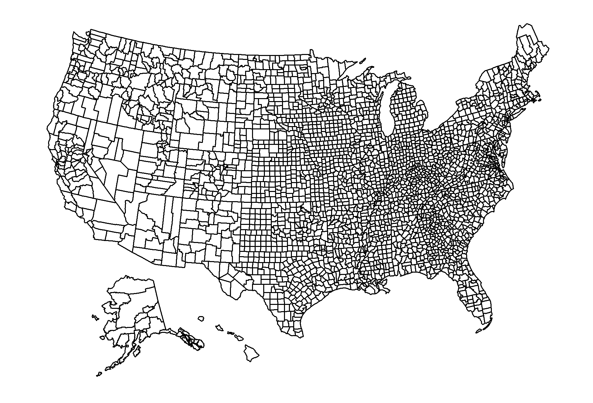

<br>
<code>usmap</code> is an <code>R</code> package designed to allow convenient plotting of US choropleths that include Alaska and Hawaii.
<br>
<br>
<h2>Links</h2>
<ul>
  <li><a href="http://www.github.com/pdil/usmap" target="_blank">Github Repo (pdil/usmap)</a> &ndash; contains source code, documentation, and tests</li>
  <li><a href="https://cran.r-project.org/package=usmap" target="_blank">Package page on CRAN</a> &ndash; contains all package metadata, documentation, and installation binaries, hosted on the <a href="https://cran.r-project.org" target="_blank">Comprehensive R Archive Network</a>.</li>
</ul>

<br>
<h2>Example</h2>
